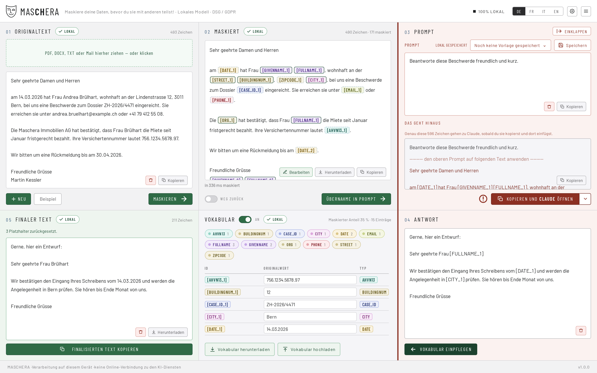
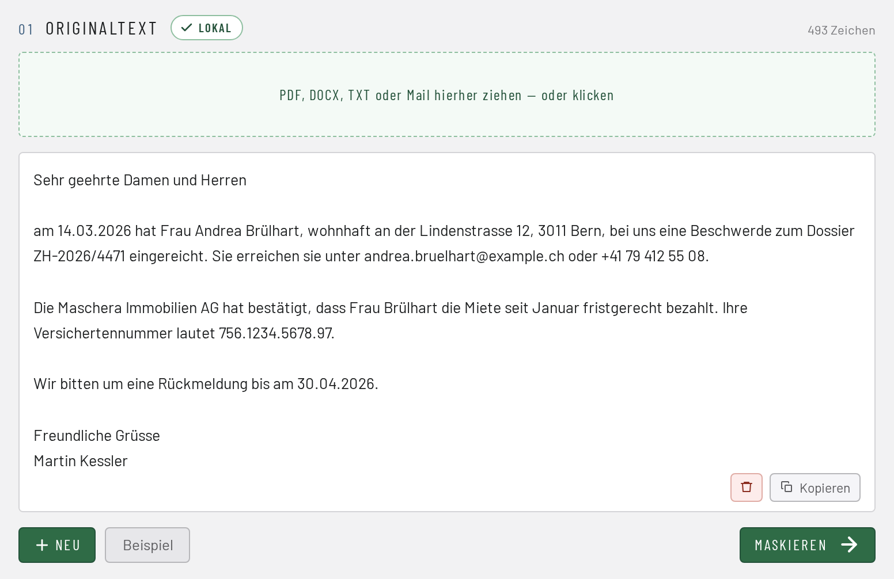
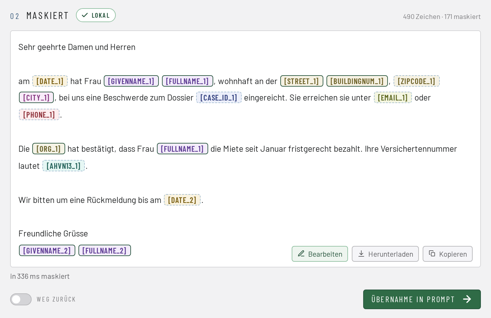
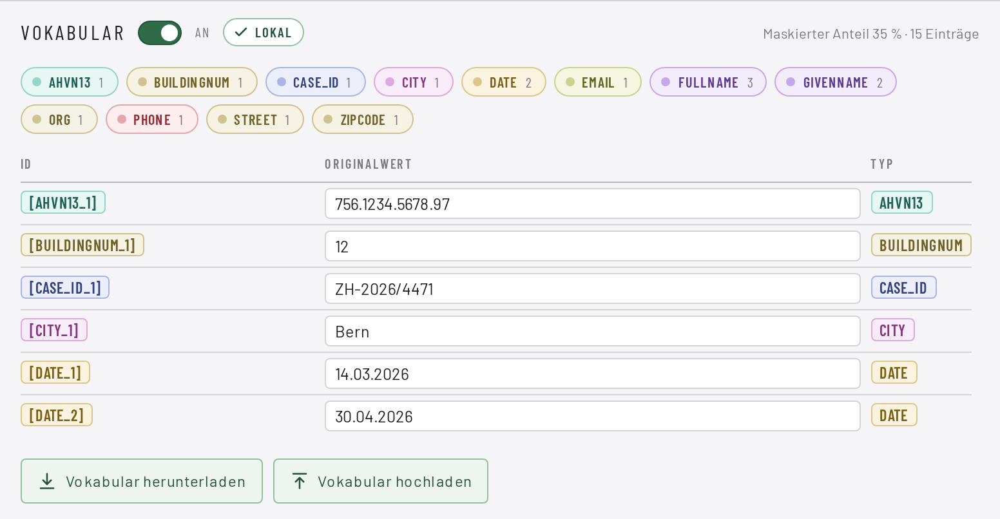
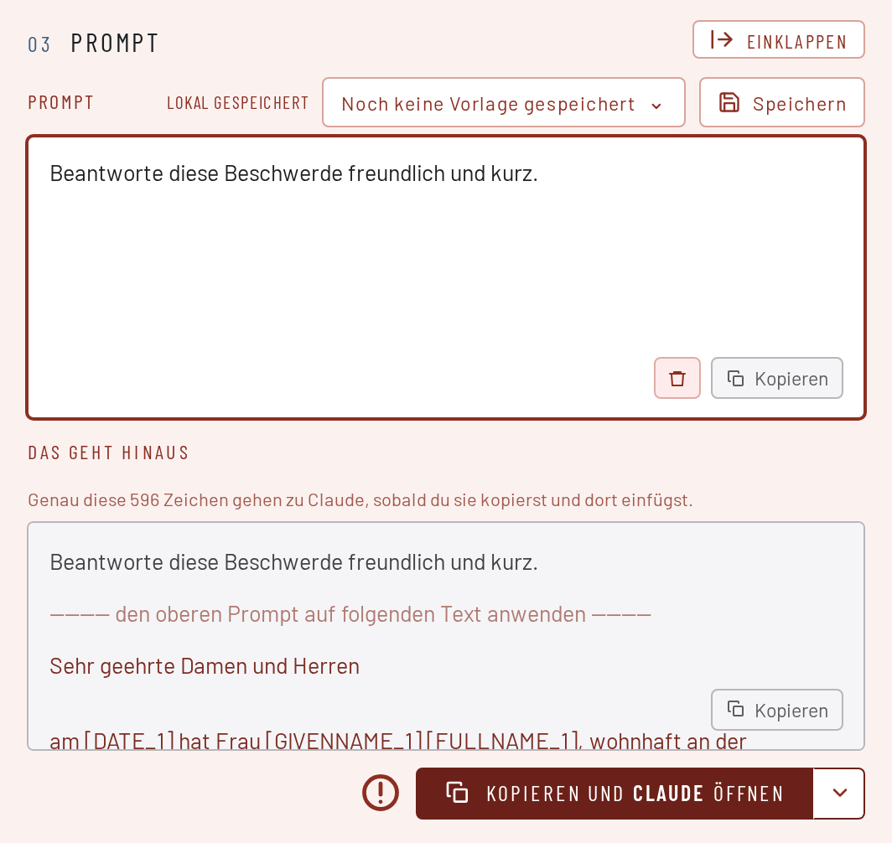
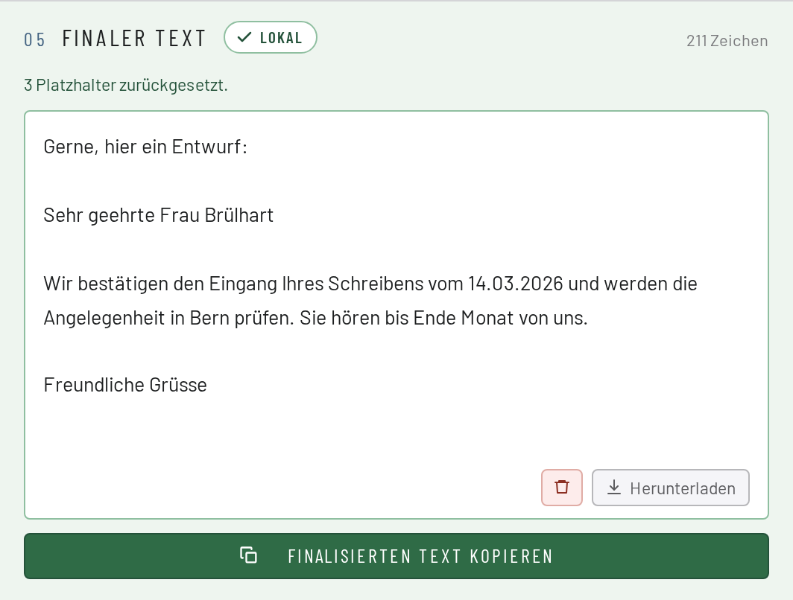
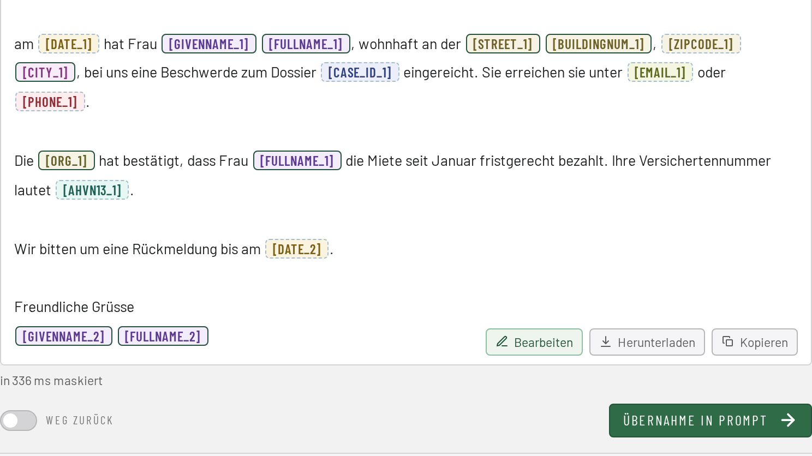

Freie Software · Open Source · läuft ohne Netz
MASCHERA maskiert Personendaten in Schweizer Dokumenten — auf deinem Gerät, im Betrieb ohne Netzwerkverbindung.
Du hast ein Schreiben, einen Mailverlauf oder ein PDF und willst ein KI-Werkzeug darüber fragen — aber die Namen, AHV-Nummern und Adressen sollen nicht mit.
Herunterladen Wie es funktioniert
Vorher
Nachher
Den maskierten Text gibst du dem Dienst deiner Wahl. Die Antwort fügst du zurück ein, und MASCHERA setzt die echten Werte wieder ein.

Vier Merkmale
Was das Werkzeug ausmacht
Es läuft auf deinem Gerät
Die ganze Erkennung läuft lokal. Im Betrieb wird nichts nachgeladen und nichts gesendet — keine Schriften, keine Symbole, keine Statistik. Einen Endpunkt, der Text verschickt, gibt es nicht und wird es nicht geben; der Weg nach draussen führt immer über deine Zwischenablage.
Es schreibt nichts auf
Gespeichert werden nur deine eigenen Einstellungen — Regeln, Vorlagen, Vorlieben —, und auch die nur auf ausdrücklichen Befehl. Kein Dokumentinhalt, kein Wörterbuch, kein Protokoll.
Umkehrbar, und das ist der Sinn
Du maskierst, fragst, und fügst die Antwort zurück ein: MASCHERA setzt die echten Werte wieder ein. Deshalb heisst es Pseudonymisierung und nicht Anonymisierung — solange das Wörterbuch existiert, ist der Vorgang umkehrbar, und die Daten bleiben nach revDSG Personendaten.
Für Schweizer Dokumente gebaut
AHV-Nummer, UID, IBAN, QR-Referenz, Gebäude- und Wohnungsidentifikator, Ausweiskategorie, Kontrollschild, ZSR-Nummer — mit den Prüfsummen, die dazugehören. 45 Merkmalsarten insgesamt. Vier Sprachen: Deutsch, Französisch, Italienisch und Englisch.
Der Ablauf
Fünf Schritte
Dokument öffnen bzw. reinziehen oder Text einfügen
Gelesen werden .pdf, .docx, .eml, .msg (Outlook), .mbox, .txt, .md, .csv, .json.

Maskieren
Jede Fundstelle wird farbig angezeigt, mit ihrer Herkunft — Prüfsumme, Muster oder Modell.

Prüfen
Du siehst, was ersetzt wurde, bevor der Text irgendwohin geht.

Kopieren und einfügen
Beim Dienst deiner Wahl, von Hand. Das Werkzeug schickt nichts selbst.

Antwort zurück einfügen
Die echten Werte kommen wieder herein.

Ein leerer Befund ist keine Entwarnung. Ein gescanntes PDF ohne Textebene ergibt einen Fehler mit Begründung, nicht «keine Personendaten gefunden». Ein Werkzeug, das dort Entwarnung gibt, ist gefährlicher als eines, das gar nichts sagt.
Drei Stufen — es ist nicht bloss «eine KI»
| Stufe | Was sie tut |
|---|---|
| 1 · Prüfsummen | AHV-Nummer, UID, IBAN, QR-Referenz, Kreditkarte, GLN. Gültige Prüfsumme → maskieren, auch wenn das Modell schweigt. Ungültige → verwerfen, auch wenn es anschlägt. |
| 2 · Muster mit Kontextanker | Telefonnummer, Postleitzahl, Kontrollschild, Ausweiskategorie, Fallnummer und weitere — viersprachige Ankerwörter, kein Vorrang vor dem Modell. Dazu kommen deine eigenen Regeln: Wörter und Muster, die du selbst festlegst. Sie laufen wie die eingebauten Muster. Beispiele sind interne Fall-Nr. oder interne Dossier-Nr. etc. |
| 3 · Sprachmodell | Namen, Adressen, Berufe, Organisationen, Daten — alles, was kein Muster hat. |
Das Modell ist 1,2 GB gross und wurde auf synthetischen Daten trainiert — es hat nie ein echtes Dokument gesehen. Technische Angaben zum Modell.
Der wichtigste Abschnitt
MASCHERA nimmt dir die Arbeit ab, nicht die Verantwortung.
Kein Werkzeug findet jedes Personendatum. Sieh den maskierten Text an, bevor du ihn weitergibst — dafür zeigt MASCHERA jede Fundstelle farbig und mit ihrer Herkunft.
Was «Herkunft» heisst
Jede Fundstelle zeigt, woher sie stammt: aus einer geprüften Nummer, aus einem Muster mit Kontext, oder aus dem Sprachmodell. Eine AHV-Nummer mit gültiger Prüfsumme ist sicher richtig erkannt, eine Modellvermutung verdient den zweiten Blick.

Was du tun kannst, wenn etwas fehlt
Fünf Möglichkeiten, alle in der Anwendung vorhanden.
| Von Hand nachbessern | Der maskierte Text ist bearbeitbar. Platzhalter wie [FULLNAME_1] bleiben stehen — sie werden am Ende zurückgewandelt. |
| Eigene Regeln | Eigene Wörter und Muster, die zusätzlich maskiert werden. Ein Projektname, ein internes Kürzel, ein Spitzname. |
| Klartext-Typen | Einzelne Merkmalsarten dauerhaft im Klartext lassen — erkannt, aber nicht ersetzt. Wer Ortschaften stehenlassen will, stellt das einmal ein. |
| Zurückwandeln | Die Antwort des Dienstes einfügen, und die echten Werte kommen wieder herein. |
| Endgültig anonymisieren | Ohne Wörterbuch maskieren. Dann ist der Vorgang nicht mehr umkehrbar — und die Anwendung sagt das vorher. |
MASCHERA kann beides: umkehrbar für die Arbeit mit einem KI-Dienst, unumkehrbar für einen Text, der so aus dem Haus geht.
Herunterladen
Welche Datei nehme ich?
Kein Anmeldeformular, keine E-Mail-Abfrage, kein Newsletter. Die Datei liegt da, man lädt sie herunter, fertig.
Linux
AppImage: eine einzige ausführbare Datei, das Modell fährt mit. Herunterladen, ausführbar machen, fertig.
macOS
Gibt es noch nicht. Es wird daran gearbeitet — bis dahin gibt es keine Datei für macOS.
In Arbeit Noch nicht verfügbarWindows
Installer für Windows 11, 64 Bit. Installiert ohne Administratorrechte, das Modell fährt mit. Beim ersten Start warnt Windows, weil der Installer nicht signiert ist: «Weitere Informationen» → «Trotzdem ausführen».
Server
Docker, für den Betrieb als Dienst — die Oberfläche öffnet sich im Browser. Das Modell fährt mit. Der Server speichert nichts bei sich: kein Dokument, kein Wörterbuch, kein Protokoll — nach der Antwort ist alles wieder vergessen.
DockerDer Hinweis zum Modell
Das Modell ist 1,2 GB gross. Die AppImage trägt es mit. Die schlanken Pakete holen es einmal beim ersten Start — aus einer benannten Quelle, mit Prüfsumme, und erst nachdem du zugestimmt hast. Wer gerade kein WLAN hat, lehnt ab und holt es ein andermal. Danach ist beides gleich offline.
AppImage oder Flatpak?
AppImage ist eine einzige Datei: herunterladen, ausführbar machen, starten — nichts wird installiert. Flatpak fügt sich in die Paketverwaltung ein und aktualisiert sich mit ihr.
Beide bringen ihre eigenen Bibliotheken mit und sind damit unabhängig von der Ausgabe deiner Verteilung. Auf Arch-Systemen läuft Flatpak bestens; ein eigenes Arch-Paket gibt es darum nicht.
Wo alles andere steht
Das Technische wird dort gepflegt
Wie gut das Modell misst, wie es trainiert wurde, wie das Programm gebaut ist — das steht dort und wird dort aktuell gehalten.